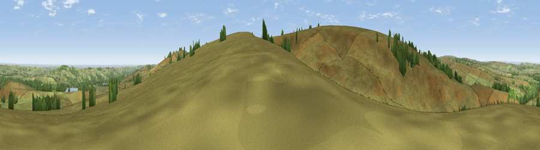

Viewpoint near Upper Midhope
#12905 in England · top 16% of its area beats it · near Upper Midhope · open accessWhere it is
The exact computed spot (SK 19225 98425). Click the marker for map links.
Public access: this spot lies on mapped open-access land (CRoW Act 2000) — you may roam here on foot. Computed from Natural England's CRoW access layer and OpenStreetMap rights of way — not the legal definitive map. Always verify locally.
The view, rendered

A 360° render of this exact spot computed from the terrain model, tree cover and land cover — summer colours, afternoon light, calibrated against photographs of famous viewpoints. Real trees, hedges and buildings will differ in detail.
The panorama
Grey silhouette: terrain skyline in each direction (720 bearings, Earth curvature and refraction included). Dashed green: skyline with trees (+15 m) and buildings (+8 m) as obstacles. Blue strip: how far the ground is visible on each bearing.
Where the view opens
Wedge length = distance to the farthest visible ground on that bearing (vegetation-aware). Rings at 10, 25 and 50 km.
What fills the view
91% grassland · 7% woodland · 1% cropland
Angular shares of the visible panorama (visual magnitude), not map area. Landscape diversity 0.16 (0–1 Shannon).
Key numbers
More beautiful places nearby
The staircase of upgrades: each row has a higher view potential than everything closer. Driving times are estimates from straight-line distance, calibrated against real road routing — check an actual route before setting out.
| Place | Direction | Drive | Score |
|---|---|---|---|
| Pike Lowe | ESE · 2 km | ~5 min | 67.9 |
| Viewpoint near Upper Midhope | SW · 2 km | ~6 min | 68.8 |
| High Stones | S · 4 km | ~9 min | 70.7 |
| Back Tor | S · 7 km | ~15 min | 71.1 |
| Viewpoint near Stocksbridge | E · 8 km | ~15 min | 73.1 |
| Viewpoint near Jackson Bridge | N · 9 km | ~18 min | 73.5 |
| Viewpoint near Thornhill | S · 10 km | ~19 min | 74.1 |
| Viewpoint near Wharncliffe Side | E · 12 km | ~23 min | 75.0 |
53.48220, -1.71177 · source: screening · position refined by local search. Computed location — check access rights before visiting.